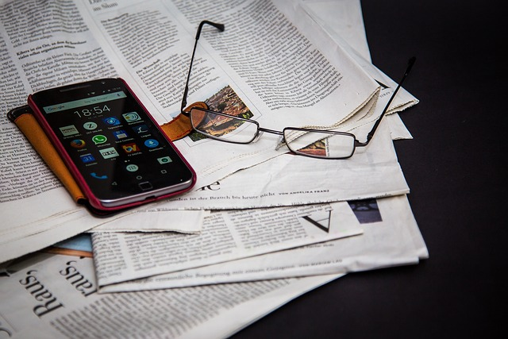
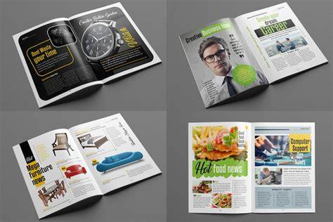
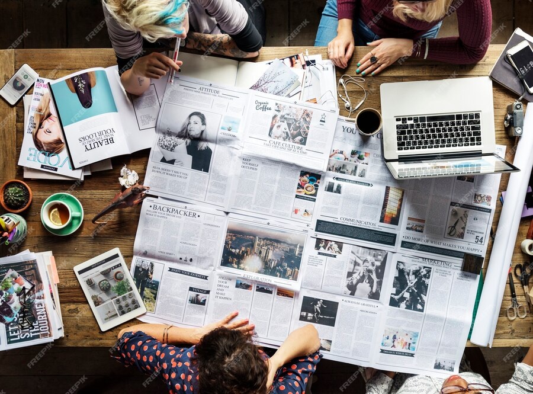

Article Portable Website
what is Article
An article is long-form content written on a particular topic to be published online or offline, including newspapers. An article paper is an essential way to convey ideas, research, news, and opinions on specific topics. Its structured format—introduction, body, and conclusion—allows the writer to effectively communicate with the audience. Whether it's an academic, journalistic, or opinion piece, an article is a valuable medium for sharing information and sparking conversation.To write a proper article, it is important to know what is asked to be written about and how to articulate your thoughts into words to create appropriate content.

An article paper is a written work that provides information, insights, or opinions about a particular topic. These papers are typically more structured and formal than other types of writing like blog posts or essays, especially when they are published in academic journals, magazines, or newspapers.
Magazine Article
A magazine article is typically a piece of writing that's published in a magazine, with the goal of informing or entertaining the reader. Magazine articles can range from news articles to feature stories to essays or opinion pieces.Every good magazine article has a strong angle - a unique and interesting perspective on the topic. Your angle should be clear and well-defined, and should set your article apart from others on the same subject. A good angle can help you grab the reader's attention and keep them engaged throughout your article.

There are many types of magazine articles, each with their own unique purpose and style. News articles, for example, cover current events and breaking news, providing readers with up-to-date information on what's happening in the world. Feature stories, on the other hand, delve deeper into a topic or issue, providing readers with a more in-depth understanding of a particular subject. Personal essays tell a story from the author's own experiences, providing readers with a personal and emotional connection to the topic. Profiles highlight an individual or group, providing readers with insight into the lives and experiences of others.
Regardless of the type of magazine article you're writing, it's important to keep your audience in mind. Consider what they want to read, what they're interested in, and what they value. This will help you tailor your article to their needs and interests, making it more engaging and relevant to them.
News Article
A news article is the finished product or piece of writing that results from newswriting. Unlike other types of writing, such as technical or creative writing, which focus on detailed explanations or artistic expression, news articles prioritize delivering verified facts in a succinct, structured format.

A regularly published collection of fairly brief articles that provide updates on current events and interests. Newspapers are generally published daily, weekly, and bi-weekly, although they may have less regular publication schedules. Most major newspapers publish daily, with expanded coverage on the weekends. Newspapers can be national or international in focus or might be targeted strictly to a particular community or locality. Newspaper articles are written largely by newspaper staff and editors and often do not provide authors' names. Many of the articles appearing in national, international, and regional papers are written by various wire service writers and are nationally or internationally syndicated. Examples of wire services are Reuters and the Associated Press. Newspapers rely on advertising for a part of their income and might also include photographs and even full color illustrations of photos. A common feature of most newspapers is its editorial page, where the editors express opinions on timely topics and invite their readers to submit their opinions.
Research Article
A research article presents results from research projects.
The authors usually present either data from their own stu
dies (empirical studies) or presents and interprets literature
in a particular area (literature reviews), in the latter case,
it is usually referred to as a review article. As a rule, also
empirical studies have a backgrounds chapter with a
summary of literature on the subject.
The scientific or research article can be defined as a technical document that describes a significant experimental, theoretical, or observational extension of current knowledge or advances in the practical application of known principles. The reported findings must not only be original, that is, previously unpublished, but also valid in terms of providing sufficient and important information, and they must be published in accordance with a structure and style previously agreed on by the scientific medical community.
Journal Article
Journal articles are the mainstay of academic publishing. They are original, peer-reviewed research that appears in a scholarly journal. The idea behind peer review is that other experts in the field review your article before it is published and help ensure that it is scientifically sound.
These articles usually have a fancy name, called the title, and theyre usually written in sections, like an introduction, methods, results, and conclusion. The cool thing about them is that they use big words, but they also explain them, so you don’t feel lost. Oh, and they also have cool pictures and graphs to help you understand the information better.
Now, you might be wondering, “Why should I care about journal articles?” Well, my little friend, they are like a magic portal to new knowledge!
When you read them, you can learn about exciting discoveries, cool experiments, and amazing facts that you might not find anywhere else. Plus, they can help you when you’re doing research.

Here are a few examples collected by our Book Writing Founders UK expert researchers. These examples of journal articles are not only easy to understand but will also help improve your research skills. . Explore the exciting world of research in our articles on how to become a technical writer in 7 super simple steps and marketing content writer: what is it and how to become one.
Travel Article
Sometimes our beautiful world seems like a scary place. The news that we are drip-fed through our devices often paints a biased and disproportionally terrifying picture. Technologically, we are more connected, but in many ways more isolated than ever.
Instead of using interconnectedness to seek out data that broadens our knowledge and understanding, too often we seek out information that reinforces our prejudices and fears. Politicians and others understand this trait well and weaponize it to manipulate and control our actions in ways that favor them.
Once ideas, even false ones, have taken hold, it is much more difficult to take in information that challenges those ideas. Challenging beliefs and preconceptions can be uncomfortable. For me, one of the best ways to overcome false information about the world is to travel.

Travel writing can be defined as writing that describes places, peoples and cultures.
Types of travel writing literature include:
Adventure travel – travel that includes descriptions of memorable experiences, daring expeditions, long arduous journeys, and other adventurous or exciting events.
Travel guides – factual information on places, people, culture, customs, languages and history, with recommendations and guidance provided to inspire and inform other travellers.
Travelogues – personal experiences of travelling, with descriptions of places, customs and people. Travelogues are often written by authors during their travels.
Promotional travel writing – marketing and advertising of places, resorts, activities, events and services, intended to sell holidays or inspire travel to particular locations.
Travel articles can be found in many daily newspapers and popular magazines, in specialist travel publications, or online in blogs and on websites.
Personal Article
Every day, in person, we tell our stories to friends and co-workers in part to get a reaction from them. Like trying to recreate the recipe for a favorite dish, the trick is to get our stories down on paper in a way that captures the same kind of emotion we exude when we’re sharing them face-to-face.
Essay writing is popular because we’re used to writing about ourselves in some fashion, whether it’s in a journal, a blog, or in elaborate emails about our weekend activities. You can take those starter pieces and add a few extra ingredients, like a stunning opening line and a quirky ending, and you’re on your way to writing a powerful personal narrative.
But don’t stop working on your piece too soon. Once you get the basic story down, it’s important to keep working on it until it’s “off the hook,” as Food Network star Guy Fieri says. Here are nine ways to infuse your essays with more flavor:
Powerful essays resonate with the reader; they ring true. They can also validate what you feel or believe. You don’t have to write about a large theme—you can write about a single moment in time—and still greatly affect someone. When they’re reading your words, you want your audience to nod in agreement, get the chills, or laugh until their stomachs hurt.